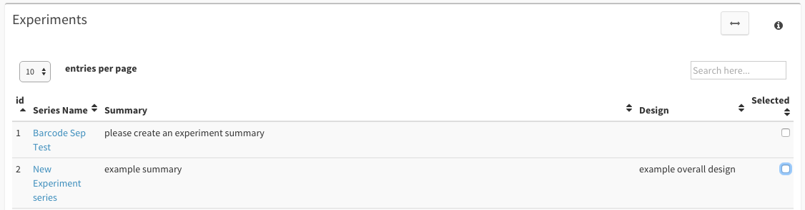
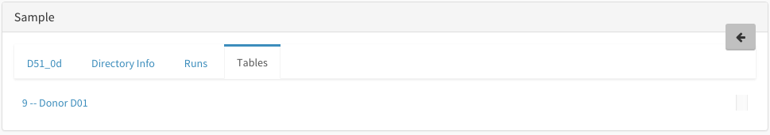
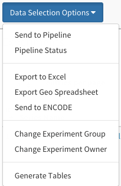

NGS Browser Guide¶
This guide will walk you through all of your options within the NGS Browser
Getting Started¶
First, make sure to have an instance of dolphin available (see Dolphin Docker) as well as an account for the dolphin interface.
Once logged in, click on the ‘NGS Tracking’ tab on the left, then click on ‘NGS Browser’.

Getting to Know the Browser¶
The NGS Browser can be broken down into 3 sections:
Browse Catagories:

The browse catagories section is located within the top left side of the page. It is marked at the top by the ‘Browse’ tag.
This section of the browser lets the user sort samples shown based on specific categories that the user can select. Users can select more than one category for additional filtering.
Categories include:
- Assay
- Organism
- Molecule
- Source
- Genotype
The blue rewind button at the top right of the Browse section will bring the user back to a clean search state.
Selected Samples:

This section of the browser is located right under the Browse category section. As the user selects more Imports/Samples, this box will fill up with the selected samples.
As the box fills with samples, users can click the red ‘X’ next to a specific sample to unselect that sample. In addition, as samples are selected the ‘Clear’ button will become active and by clicking this button will remove all of the selected samples.
Data Tables:
The data tables are the main highlight of the NGS Browser.
Starting at the top right of the page, 3 tables followed by a series of button options will follow. These tables show information about:
- Experiment Series
- Imports
- Samples
There are some helpful tools and information at the top of each table. On the left you have the tables name, and on the right you have an expanding option which will let you see more detailed information about the contents of the specific table followed by an info button that also explains some additional information.
As you move down the table, you can then select how many entries per page you want to view on the left and you can also conduct a real-time search on the right.
Next is the actual contents of the table itself followed by page navigation buttons. If you have the proper permissions, you may edit the contents of the table by clicking on the specific cell within the table. Some fields contain standard text boxes while others will have a searchable dropdown box for you to select previous submissions for that columns category.
For the each of the tables, selection checkboxes are located on the right side of each table row. A helpful ‘!’ button is also placed near these checkboxes to indicate that the Import/Sample is not currently ready for use due to the processing step.
Within the Samples and the Imports table, the column labeled ‘Backup’ lets you know the status of your fastq file backup to AWS. Grey buttons mean there is no backup checksum to compare to your fastq file. Red buttons means that the fastq checksum and the AWS checksum do not match. A blue button lets the user know that the last modification to this upload was over 2 months ago, and the green button lets the user know that file checksum matches the AWS checksum.
Selection Details:

Within each table, each entry contains a name which is a clickable link. By clicking this link the user will be directed to a new tab with detailed information about that selection.
By clicking on a specific Experiment Series, detailed information about that experiment series will be displayed as well as the Imports/Samples being displayed in the other tables will be from that specific Experiment Series. The same applies if a user selects an Import or a Sample name.
Clicking on a sample for details will produce a table with 4 different tabs. The first tab, named after the samples name, will display all of the information stored about the sample to the user.

The second tab labeled as ‘Directory Info’ will display all of the directory information related to the sample.

The third tab labeled as ‘Runs’ will display all of the links to each run report in which the sample has been used that you have permissions to access (For more information on reports see the NGS Reports Guide).

The last tab labeled as ‘Tables’ will display all of the links to custom tables in which the sample has been used that you have permissions to access (For more information on generated tables see the Table Creator Guide).
In the sample detailed information, as long as you have permissions to do so, you can edit the file names and directory paths. Please be warned that editting these file names and directory paths must accurately match the actual file names and paths.
At the top right of each Selection Details tab will be a grey arrow button. This will return the user back to the table portion of the NGS Browser.
Option Buttons:
At the bottom of the page there are a series of buttons that the user can click to perform specific tasks.
- Send to Pipeline: Experiment Series/Imports/Samples selected will then be sent to the NGS Pipeline page for further option selection and processing.
- Pipeline Status: This button takes the user to the NGS Status page where they can view their current/previous runs.
- Export to Excel: This button will take the selected Imports/Samples and save them to an excel spreadsheet for the users convience (See Excel Export Guide)
- Export Geo Spreadsheet: This button takes your selected samples information and fills out an excel spreadsheet for geo submission (some additional information may be required).
- Send to ENCODE: DISABLED Under Construction
- Change Experiment Group: If you’re the owner of an experiment series, you can change which group it belongs to as long as you belong to that group.
- Change Experiment Owner: If you’re the owner of an experiment series, you can transfer ownership to another user within the same group.
- Delete Selected: This button will delete the selected Experiment Series/Imports/Samples.
Note that users need the proper permissions to delete a selected Experiment Series/Import/Sample. A message will be displayed upon selecting the Delete Selected button showing the Experiment Series/Imports/Samples that the user has permissions to delete as well as a confirmation text to confirm the deletion.
Before deleting Imports/Samples, please inform your fellow researchers for deleting this information is not recoverable. If you wish to delete Imports/Samples that you do not have permission to delete, contact either the owner of the Import/Sample, your local administrator, or someone at biocore@umassmed.edu.